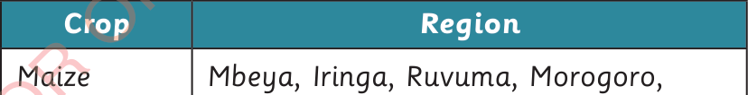

domestic purposes. In addition, the society should protect and conserve forests, instead of burning them.
Human activities and environmental degradation
Human activities depend on the existence of a conducive environment. If human activities are not undertaken carefully, they contribute to the destruction of the environment, and thus, human beings cannot benefit from it. Some of these activities are farming, livestock keeping, fishing, industrial activities, mining and lumbering.
Farming
Farming is an activity that involves the production of various crops. Human beings produce food and cash crops. Some of the food crops produced are maize, rice, cassava, sorghum, millet, bananas and groundnuts. Cash crops include cotton, coffee, sisal, cashewnuts and tea. Depending on climate, these crops are cultivated in different regions in the country. Table 1 shows some of the main food and cash cropproducing regions in Tanzania.

| Crop | Region |
|---|---|
| Maize | Mbeya, Iringa, Ruvuma, Morogoro, Rukwa, Dodoma, Kilimanjaro, Njombe, Katavi and Songwe |
| Rice | Mbeya, Rukwa, Morogoro, Pwani, Tabora, Mwanza and Shinyanga |
| Banana | Kagera, Arusha, Kilimanjaro and Mbeya |